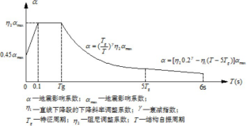

实验教学方法和教学体系
学生通过观看实验简介视频和实验引导视频，对实验涵盖的知识点和内容进行全面了解，通过学习实验预备知识，做好实验所需知识的储备工作后，系统会提示继续观看储备知识还是开始做实验，学生可以通过选择继续观看储备知识选项进行相关知识点的进一步巩固，也可以选择开始实验选项直接开始实验，在实验过程中按照系统提示进行相关操作，实验完成之后，学生可以进入评测系统查看自己的实验完成情况。
实验方法主要是通过与系统交互，填写结构参数和相关实验环境参数，具体表现为场地类型的参数选择、地震动类型的参数选择、震中距的参数选择和结构阻尼比的参数选择，这些参数的变化，与抗震设计的地震作用计算和反应谱的绘制工作相结合，提升学生的抗震设计能力；同时，实验过程中要求学生进行布片位置的确定，考查了学生对结构检测相关知识点的掌握情况，较好的提升了学生的结构检测方案的设计水平和能力。
实验教学过程与实验方法
学生通过观看实验简介视频和实验引导视频，对实验涵盖的知识点和内容进行全面了解，通过学习实验预备知识，做好实验所需知识的储备工作后，系统会提示继续观看储备知识还是开始做实验，学生可以通过选择继续观看储备知识选项进行相关知识点的进一步巩固，也可以选择开始实验选项直接开始实验，在实验过程中按照系统提示进行相关操作，实验完成之后，学生可以进入评测系统查看自己的实验完成情况。 实验方法主要是通过与系统交互，填写结构参数和相关实验环境参数，具体表现为场地类型的参数选择、地震动类型的参数选择、震中距的参数选择和结构阻尼比的参数选择，这些参数的变化，与抗震设计的地震作用计算和反应谱的绘制工作相结合，提升学生的抗震设计能力；同时，实验过程中要求学生进行布片位置的确定，考查了学生对结构检测相关知识点的掌握情况，较好的提升了学生的结构检测方案的设计水平和能力。 |
|||||||||||||||||||||||||||||||||||||||||||||||||||||||||||||||||||||||||||||||||||||||
步骤要求（1）学生交互性操作步骤，共16步
交互性步骤详细说明1）结构缩尺建模 展示。 2) 结构计算简图选择 展示。 3）结构动力特性分析 展示。 4）结构动载试验方案设计 展示。 5）地震模拟振动台实验 ①多自由度结构体系设计模块 第一步：按照给定条件填写结构信息、布置构件；布置结构荷载； 第二步：通过GSRevit生成人造波，并对人造波进行谱分析。 ②强震记录分析模块 第三步：在预设好的第一组、第二组和第三组地震数据库中分析选择适应指定场地土类型的强震记录。地震动经分析显示功率谱，从频谱图中记录地震动的卓越周期。 第四步：嵌入实验过程小测验1：不同地震动的频谱特性比较分析 ③反应谱分析模块 第五步：将不同类型地震动分别输入结构模型进行地震响应数值分析，在加速度时程曲线中分别记录加速度响应的峰值 第六步：绘制反应谱曲线，将结构自振周期作为横坐标，将加速度峰值作为纵坐标 第七步：调整场地土类型，重复地震反应分析，绘制反应谱曲线 第八步：调整震中距改变地震动类型，重复地震反应分析，绘制反应谱曲线 第九步：调整结构阻尼比，重复进行地震反应分析，绘制反应谱曲线 第十步：拟合标准反应谱曲线（如图2-4） ④地震模拟振动台实验操作模块 第十一步：嵌入实验过程小测验2：确定结构自振周期T、地震影响系数最大值 和特征周期 等参数，按照图2-3计算地震影响系数α，由F=αG计算地震作用  图2-4 地震影响系数曲线 第十二步：嵌入实验过程小测验3：学生在振动台相应位置填写振动台构造名称。 第十三步：输入多自由度结构体系的模型尺寸、质量、弹性模量等参数，确定加速度传感器的布点位置 第十四步：模拟加载，记录实验数据 第十五步：选择地震动输入峰值和方向 第十六步：地震动加载并记录实验数据 6）结构检测报告编制 |
|||||||||||||||||||||||||||||||||||||||||||||||||||||||||||||||||||||||||||||||||||||||
实验结果与结论
该实验过程中实验条件的变化主要涉及场地类型、地震动类型、震中距和结构阻尼比等4个方面的实验条件变化。 学生在实验过程中，通过选择不同的场地类型，实验系统会进行相应周期的调整，并在反应谱曲线中进行体现，同时地震作用值随之调整； 学生在实验过程中，通过选择不同的地震动类型，实验系统会进行相应加速度响应峰值调整，并在反应谱曲线中进行体现； 学生在实验过程中，通过选择不同的震中距，实验系统会进行相应周期调整，并在反应谱曲线中进行体现； 学生在实验过程中，通过选择不同的结构阻尼比，实验系统会进行相应周期调整，并在反应谱曲线中进行体现，同时地震作用值随之调整。 |
|||||||||||||||||||||||||||||||||||||||||||||||||||||||||||||||||||||||||||||||||||||||
面向学生要求
（1）专业与年级要求 土木工程专业，三年级、四年级学生 （2）基本知识和能力要求 通过该结构缩尺建模模块的实验教学，使学生初步了解结构缩尺建模的基本知识和方法，具备一定的缩尺建模思维能力； 通过该结构计算简图选择模块的实验教学，使学生掌握结构计算简图确定的基本方法和原则，明确结构计算简图应尽可能反映结构的真实受力情况和尽可能使计算过程简化，以提升学生结构设计的质量和水平； 通过该结构动力特性分析模块的实验教学，使学生了解由已知结构和动力荷载来计算结构的响应的基本方法，通过确定结构的承载能力和动力特性，对改善结构性能、合理进行设计的重要性，提升学生的工程设计水平和能力； 通过该结构动载试验方案设计模块的实验教学，使学生将所学专业知识转化为工程应用，通过选择合理的布片位置等方案设计，提升学生的检测方案设计水平和能力； 通过该地震模拟振动台实验模块的实验教学，解决学生对《抗震设计》课程学习中碰到的因实验条件不具备造成的知识点抽象、学习难度大等问题，提升学生的抗震设计知识储备和抗震设计水平和能力； 通过该结构检测报告编制模块的实验教学，解决理论教学和实践环节联系紧密度不足的问题，通过对实验过程中的交互操作，最终形成的框架结构体系检测报告，能够较好的反应在抗震设计中选择不同的设计参数，结构的性能的及时响应，提升学生的工程设计认知和学习动力。 |